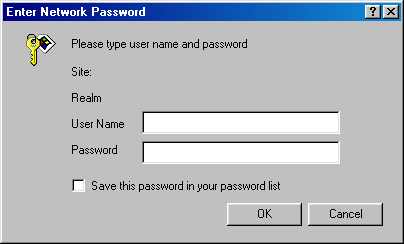

Безопасность
Non sum qualis eram
(Я не такой, каким был раньше).
Гораций
Когда-то, наткнувшись на эту цитату из Горация, я подумал, что она очень точно отражает суть сетевой безопасности, и сохранил ее где-то в недрах своего жесткого диска на будущее.
Конечно, читатель недоумевает — какое отношение древнеримский поэт Гораций имеет к сетевой безопасности? Безопасность — одна из тем, порождающих нескончаемый поток информации и вечно меняющихся в соответствии с новыми технологическими веяниями. Короче говоря, она в любой момент «не такая, какой была раньше». Вы никогда не можете полагаться на свои познания в этой области, поскольку в момент выхода на широкий рынок любая технология либо устаревает, либо обречена на устаревание в ближайшем будущем. Чтобы добиться относительной безопасности при построении серверных приложений, вам придется постоянно следить за последними достижениями в этой области или нанять кого-нибудь, кто это будет делать за вас.
Применительно к РНР тема безопасности выглядит многогранной, причем некоторые ее аспекты связаны с безопасностью самого сервера. Ведь безопасность сервера во многих отношениях определяет безопасность данных, обрабатываемых сценариям РНР. Я настоятельно рекомендую собрать как можно больше информации о вашем web-сервере и постоянно следить за всеми обновлениями и исправлениями. Вероятно, большинство читателей работает с сервером Apache, поэтому я советую почаще посещать сайт Apache (http://www.apache.org) и замечательный сайт Apache Week (http://www.apacheweek.org). Впрочем, безопасностью сервера дело не ограничивается — РНР также в определенной степени влияет на безопасность системы за счет правильного выбора параметров конфигурации и защищенного программирования.
Последняя глава этой книги состоит из пяти разделов:
Хотя ни один из этих разделов не содержит ответов на все вопросы, относящиеся к построению защищенных приложений на базе РНР, по крайней мере, они закладывают основу для дальнейших самостоятельных исследований.
Сразу же после установки РНР следует уделить внимание некоторым аспектам конфигурации, влияющим на безопасность вашей системы. Конечно, выбор зависит от конкретной ситуации. Например, если программированием на РНР будете заниматься только вы и ваши коллеги, то конфигурация системы безопасности будет выглядеть совсем не так, как если бы программирование сценариев РНР, работающих на сервере, разрешалось всем клиентам. Независимо от ситуации, следует внимательно проанализировать все параметры конфигурации и разрешить только то, что действительно необходимо. Параметры конфигурации РНР определяются в файле php.ini.
При включении безопасного режима (safe_mode) ограничивается использование некоторых потенциально опасных возможностей РНР. Для включения или выключения безопасного режима параметру safe_mode присваивается значение on или off. Механизм ограничения основан на сравнении идентификатора пользователя (UID) выполняющегося сценария с идентификатором пользователя того файла, к которому этот сценарий пытается обратиться. Если идентификаторы совпадают, функция выполняется; в противном случае попытка завершается неудачей.
Безопасный режим не может использоваться в том случае, если РНР откомпилирован в виде модуля Apache. Дело в том, что при работе РНР в режиме модуля Apache все сценарии РНР работают под тем же идентификатором, что и Apache, что не позволяет различать владельцев разных сценариев. За дополнительной информацией обращайтесь к разделу «Безопасный режим и работа РНР в режиме модуля Apache».
В частности, при включении безопасного режима действуют следующие ограничения:
В табл. 16.1 приведен полный список функций, на которые распространяется безопасный режим.
Таблица 16.1. Функции, выполнение которых ограничивается в безопасном режиме
| chgrp | include | require |
| chmod | link | rmdir |
| chown | passthru | symlink |
| exec | popen | system |
| fopen | readfile | unlink |
| file | rename |
 К
сожалению, документация РНР по безопасному
режиму не обновлялась с версии 2.0, хотя
функциональность безопасного режима
практически не изменилась. Документация
находится по адресу http://www.php.net/manual/phpfi2.html.
К
сожалению, документация РНР по безопасному
режиму не обновлялась с версии 2.0, хотя
функциональность безопасного режима
практически не изменилась. Документация
находится по адресу http://www.php.net/manual/phpfi2.html.
Параметр определяет каталог для размещения системных программ, запускаемых такими функциями, как system( ), exec( ) или passthru( ). Параметр используется лишь при включенном безопасном режиме.
В этом параметре через запятую перечисляются имена функций, выполнение которых требуется запретить. Обратите внимание — этот параметр никак не связан с safe_mode. Например, чтобы запретить вызовы функций fopen( ), popen( ) и file( ), достаточно включить в конфигурационный файл следующую строку:
disable_functions = fopen, popen.file
Параметру присваивается путь к корневому каталогу для файлов РНР. Если значение doc_root представляет собой пустую строку, оно игнорируется и сценарии РНР выполняются в полном соответствии с URL. Если безопасный режим включен, а параметр doc_root содержит непустое значение, то сценарии РНР за пределами этого каталога выполняться не будут.
Параметр указывает максимальную продолжительность выполнения сценария (в секундах). По истечении указанного срока сценарий автоматически завершается, что помогает бороться с чрезмерными затратами процессорного времени на выполнение пользовательских сценариев. По умолчанию параметр равен 30 секундам. Если присвоить ему 0, время выполнения сценариев не ограничивается.
Параметр определяет максимальный объем памяти (в байтах), используемой сценарием. По умолчанию параметр равен 8 Мбайт (8 388 608 байт).
При включении параметра sql .safejnode игнорируется вся информация, передаваемая функциям mysql_connect( ) и mysql_pconnect( ), а подключения разрешаются только для UID, под которым работает web-сервер.
Параметр определяет имя подкаталога в домашнем каталоге пользователя, в котором должны находиться исполняемые сценарии РНР. Например, если параметру user_dir присвоено значение scripts и пользователь с именем Alessia хочет выполнить сценарий somescript.php, он должен создать в своем домашнем каталоге подкаталог с именем scripts и поместить сценарий в этот каталог. К сценарию можно обратиться по URL http://www.yoursite.com/~alessia/somescript.php. Обратите внимание — каталог scripts в URL не включается. Как правило, этот параметр используется в сочетании с параметром конфигурации Apache UserDi г.
Безопасный режим и работа РНР в режиме модуля Apache
Следует помнить, что при работе РНР в режиме модуля Apache безопасный режим недоступен. Это объясняется тем, что модуль РНР работает в составе сервера Apache, поэтому все сценарии РНР работают под тем же UID, что и сам сервер Apache. Поскольку ограничения вызова функций в безопасном режиме основаны на сравнении UID, этот режим полноценно работает только при использовании CGI-версии РНР в сочетании с suExec (http://www.apache.org/docs/ suexec.html). Дело в том, что CGI-версия РНР работает как отдельный процесс, что позволяет динамически изменять UID средствами suExec. Если вас интересует использование РНР в безопасном режиме, вероятно, вам следует остановить свой выбор на комбинации CGI/suExec, хотя за это приходится расплачиваться быстродействием.
Другой важный аспект конфигурации — запрет на просмотр некоторых файлов в браузере. Конечно, секретные пароли или другие конфигурационные данные должны оставаться недоступными для внешних пользователей. Эта тема рассматривается в следующем разделе.
Маскировка файлов данных и конфигурационных файлов
Этот раздел посвящен процедуре, которая играет очень важную роль независимо от используемого языка программирования. На примере сервера Apache я покажу, как легко нарушить вашу систему безопасности, если вы не предпримете необходимых шагов для «маскировки» файлов, не предназначенных для внешних пользователей.
В конфигурационном файле Apache httpd.conf присутствует параметр DocumentRoot. С его помощью устанавливается путь к каталогу, который рассматривается сервером как общедоступный каталог HTML. Считается, что любой файл в этом каталоге может быть передан в пользовательский браузер, даже если расширение этого файла не опознано. Пользователи не могут просматривать файлы, находящиеся за пределами этого каталога. Следовательно, конфигурационные файлы никогда не следует хранить в каталоге DocumentRoot!
Для примера создайте файл и введите в нем какой-нибудь «секретный» текст. Сохраните этот файл в общедоступном каталоге HTML с именем secrets и каким-нибудь экзотическим расширением типа .zkgjg. Разумеется, сервер не распознает это расширение, но все равно попытается передать запрошенные данные. Теперь запустите браузер и введите URL со ссылкой на этот файл. Интересно, правда? К счастью, у этой проблемы существует два простых решения.
Хранение файлов за пределами корневого каталога документов
В первом варианте вы просто сохраняете все файлы, которые не должны просматриваться пользователями, вне корневого каталога документов и в дальнейшем включаете их в сценарии РНР директивой include( ). Допустим, параметр DocumentRoot настроен следующим образом:
DocumentRoot C:\Program Files\Apache Group\Apache\htdocs # Windows
DocumentRoot /www/apache/home # Другие системы
Предположим, у вас имеется файл с атрибутами доступа (хост, имя пользователя, пароль) к базе данных MySQL. Конечно, этот файл не должен попадаться на глаза посторонним, поэтому вы сохраняете его вне корневого каталога документов. Например, в системе Windows можно воспользоваться каталогом C:/Program FHes/mysecretdata, а в UNIX — каталогом /usr/local/mysecretdata.
Чтобы воспользоваться атрибутами доступа в сценарии, достаточно включить эти файлы с указанием полного пути. Пример для Windows:
INCLUDE("С:/Program Files/mysecretdata/mysqlaccess.inc");
Пример для UNIX:
INCLUDE("/usr/local/mysecretdata/mysqlaccess.inc");
Конечно, при отключении безопасного режима (см. предыдущий раздел) это не помешает другим пользователям, которые могут выполнять сценарии РНР, включить этот файл в свои сценарии. Следовательно, в многопользовательской среде эту меру безопасности желательно сочетать с включением безопасного режима.
Настройка файла httpd.conf
Во втором варианте доступ к файлам с конфиденциальной информацией ограничивается по расширению файла, при этом используется параметр FILES файла httpd.conf. Допустим, вы хотите запретить пользователям доступ к файлам с расширением .inc. Для этого достаточно включить в файл httpd.conf следующий фрагмент:
<Files *.inc>
Order allow, deny
Deny from all
</Files>
После редактирования файла перезапустите сервер Apache, после этого все попытки запросить любой файл с расширением .inc в браузере отклоняются сервером. Впрочем, эти файлы все равно могут включаться в сценарии РНР. Кстати говоря, при просмотре файла httpd.conf вы увидите, что этот способ применяется для ограничения доступа к файлам .htaccess. Эти файлы используются для парольной защиты каталогов и рассматриваются в конце главы.
Даже после того, как вы обеспечили надежную конфигурацию сервера, необходимо постоянно помнить о потенциальной угрозе для системы безопасности, исходящей из программного кода РНР. Не подумайте, что язык РНР недостаточно надежен — теоретическую брешь в системе безопасности можно создать на любом языке программирования. Тем не менее, учитывая широкое распространение РНР для программирования в распределенных средах с большим количеством пользователей (то есть в Web), вероятность попыток «взлома» ваших программ со стороны пользователей существенно возрастает. Вы должны сами позаботиться о том, чтобы этого не произошло.
Обработка пользовательского ввода
Хотя обработка данных, введенных пользователем, является важной частью практически любого нормального приложения, необходимо постоянно помнить о возможности передачи неправильных данных (злонамеренной или случайной). В web-приложениях эта опасность выражена еще сильнее, поскольку пользователи могут выполнять системные команды при помощи таких функций, как system( ) или ехес( ).
Простейший способ борьбы с потенциально опасным пользовательским вводом — обработка полученных данных стандартной функцией escapeshellcmd( ).
escapeshellcmd( )
Функция escapeshellcmd( ) экранирует все сомнительные символы в строке, которые могут привести к выполнению потенциально опасной системной команды:
string escapeshellcmd(string команда)
Чтобы вы лучше представили, к каким последствиям может привести бездумное использование полученных данных, представьте, что вы предоставили пользователям возможность выполнения системных команд — например, `ls -l`. Но если пользователь введет команду `rm -rf *` и вы используете ее для эхо-вывода или вставите в вызов ехес( ) или system( ), это приведет к рекурсивному удалению файлов и каталогов на сервере! Проблемы можно решить предварительной «очисткой» команды при помощи функции escapeshel lcmd( ). В примере `rm -rf *` после предварительной обработки функцией escapeshellcmd( ) строка превращается в \ `rm -rf *\`.
 Обратные
апострофы (backticks) представляют собой
оператор РНР, который пытается выполнить
строку, заключенную между апострофами.
Результаты выполнения направляются прямо
на экран или присваиваются переменной.
Обратные
апострофы (backticks) представляют собой
оператор РНР, который пытается выполнить
строку, заключенную между апострофами.
Результаты выполнения направляются прямо
на экран или присваиваются переменной.
При обработке пользовательского ввода возникает и другая проблема — возможное внедрение тегов HTML. Особенно серьезные проблемы возникают при отображении введенной информации в браузере (как, например, на форуме). Присутствие тегов HTML в отображаемом сообщении может нарушить структуру страницы, исказить ее внешний вид или вообще помешать загрузке. Проблема решается обработкой пользовательского ввода функцией strip_tags( ).
strip_tags( )
Функция strip_tags( ) удаляет из строки все теги HTML. Синтаксис:
string strip_tags (string строка [, string разрешенные_теги])
Первый параметр определяет строку, из которой удаляются теги, а второй необязательный параметр определяет теги, остающиеся в строке. Например, теги курсивного начертания (<1 >...</ 1>) не причинят особого вреда, но лишние табличные теги (например, <td>...</td>) вызовут настоящий хаос. Пример использования функции strip_tags( ):
$input = "I <i>really</i> love РНР!";
$input = strip_tags($input);
// Результат: $input = "I really love PHP!";
На этом завершается краткое знакомство с двумя функциями, часто используемыми при обработке пользовательского ввода. Следующий раздел посвящен шифрованию данных, причем особое внимание, как обычно, уделяется стандартным функциям РНР.
Шифрованием называется процесс преобразования данных в формат, в котором они могут быть прочитаны (во всяком случае, теоретически) только предполагаемым
получателем сообщения. Получатель расшифровывает данные при помощи ключа или секретного пароля. РНР поддерживает несколько алгоритмов шифрования. Наиболее важные из этих алгоритмов описаны ниже.
Шифрование данных в Web имеет смысл только в том случае, если сценарии, в которых используются средства шифрования, работают на защищенном сервере. Почему? Поскольку РНР является сценарным языком, работающим на стороне сервера, перед шифрованием данные должны быть отправлены на сервер в простом текстовом формате. Если данные передаются через незащищенное соединение, существует немало способов перехвата этой информации в процессе ее пересылки от пользователя на сервер. За дополнительными сведениями о защите сервера Apache обращайтесь на сайт http://www.apache-ssl.org. Читателям, работающим с другими web-серверами, следует обращаться к документации. Скорее всего, для этих серверов существует хотя бы одно (а может, и больше) решение области безопасности.
md5( )
Хэширующий алгоритм MD5 используется (в частности) для создания цифровых подписей, позволяющих однозначно идентифицировать отправителя. В РНР для этого алгоритма существует специальная функция
string md5(string строка)
MD5 является алгоритмом «одностороннего» хэширования; это означает, что данные, хэшируемые функцией md5(), восстановить уже невозможно.
Алгоритм MD5 также применяется при проверке паролей. Поскольку теоретически невозможно восстановить исходную строку, обработанную алгоритмом MD5, можно хэшировать пароль функцией md5( ) и затем сравнивать зашифрованный пароль с результатом обработки пароля, введенного пользователем при попытке получения доступа к конфиденциальной информации.
Допустим, у нас имеется некоторый секретный пароль toystore с хэш-кодом 745e2abd7c52eeldd7cl4aeOd71b9d76. Хэшированное значение сохраняется на сервере и сравнивается с хэш-эквивалентом пароля, введенного пользователем. Даже если злоумышленник получит доступ к зашифрованному паролю, это ни на что не повлияет, поскольку он (теоретически) не сможет восстановить по нему оригинал. Пример хэширования строки:
$val = "secret";
$hash_val = md5 ($val);
// $hash_val = "Clab6fb9182fl6eed935bal9aa830788";
В следующем раздеяе я представлю другой способ шифрования данных, в котором используется одна из стандартных функций РНР.
crypt( )
Функция crypt( ) является удобным средством для одностороннего шифрования данных. Под «односторонним шифрованием» я подразумеваю, что данные могут только шифроваться — алгоритмы для расшифровки данных, обработанных функцией crypt( ), пока неизвестны. Синтаксис:
string cкypt(string строке [, детерминант])
Первый параметр определяет строку, шифруемую функцией crypt( ). Необязательный второй параметр определяет алгоритм, используемый при шифровании. Точнее, тип алгоритма определяется длиной детерминанта. Различные типы алгоритмов и длины их детерминантов перечислены в табл. 16.2.
Таблица 16.2. Алгоритмы шифрования и длины их детерминантов
| Алгоритм | Длина |
| CRYPT_STD_DES | 2 |
| CRYPT_EXT_OES | 9 |
| CRYPT_MD5 | 12 |
| CRYPT BLOWFISH | 16 |
В листинге 16.1 продемонстрировано использование функции crypt( ) для создания и сравнения зашифрованных паролей.
Листинг 16.1. Применение функции crypt (STD_DES) для хранения и сравнения паролей <?
<?
$user_pass = "123456";
// Выделить первые два символа $user_pass
// и использовать их в качестве детерминанта.
$salt = substr($user_pass. 0, 2);
// Зашифровать и сохранить пароль.
$crypt1 = crypt($user_pass, ;salt);
// $crypt1 = "12tir.zIbWQ3c"
//... пользователь вводит пароль
$entered_pass = "123456";
// Получить первые два символа хранящегося пароля
$salt1 = substr($crypt, 0, 2);
// Зашифровать $entered_pass, используя $saltl в качестве детерминанта.
$crypt2 = crypt($entered_pass, $salt1);
// $crypt2 = "12tir.zIbWQ3c";
// Следовательно. $cryptl = $crypt2
?>
 Если
вы выбираете между crypt( ) и md5() для шифрования
данных на сайте, рекомендую остановиться
на md5( ) — эта функция обеспечивает лучшую
защиту.
Если
вы выбираете между crypt( ) и md5() для шифрования
данных на сайте, рекомендую остановиться
на md5( ) — эта функция обеспечивает лучшую
защиту.
Как видно из листинга 16.1, $crypt совпадает с $crypt2, но только потому, что мы правильно использовали первые два символа $crypt1 в качестве детерминанта для шифрования $entered_pass. Поэкспериментируйте с этим примером, попробуйте использовать различные значения, и вы убедитесь, что $crypt1 совпадает с $crypt2 лишь при использовании этой процедуры.
mhash( )
Функция mhash( ) поддерживает несколько алгоритмов хэширования, которые позволяют разработчикам использовать контрольные суммы и разнообразные цифровые подписи в приложениях РНР. Хэши также используются для хранения паролей. Подключение модуля mhash в РНР выполняется очень просто:
Как видите, ничего сложного. Впрочем, имеется одно обстоятельство, которое часто вызывает проблемы при компиляции mhash для комбинации РНР/Apache, — многим пользователям приходится конфигурировать mhash следующим образом: " ./configure -disable -pthreads" (вы поймете, о чем идет речь, если прочитаете документ INSTALL). Помните об этом в процессе компиляции.
После завершения установки в вашем распоряжении оказываются все функциональные возможности mhash. Алгоритмы хэширования, поддерживаемые в настоящее время mhash, перечислены в табл. 16.3.
Таблица 16.3. Алгоритмы хэширования, поддерживаемые mhash( )
| SHA1 | RIPEMD160 | MD5 |
| GOST | TIGER | SNEFRU |
| HAVAL | CRC32 | |
| RIPEMD128 | ||
| CRC32B |
mcrypt( )
Mcrypt — популярный пакет шифрования данных в РНР, обеспечивающий возможность двустороннего шифрования (то есть собственно шифрование и расшифровку данных). Четыре режима шифрования, поддерживаемых модулем mcrypt, перечислены ниже.
CBC
Режим СВС (Cipher Block Chaining) является самым распространенным из всех четырех режимов mcrypt. В отличие от режима ЕСВ (см. ниже), СВС обеспечивает разное шифрование идентичных блоков текста, что затрудняет поиск закономерностей при попытке несанкционированной расшифровки. Если вы не знаете, какой из четырех режимов следует использовать, выбирайте СВС. Впрочем, перед принятием окончательного решения стоит ознакомиться со всеми четырьмя режимами.
СFВ
Режим СFВ (Cipher Feedback) обладает некоторыми характеристиками потоковых шифров, что избавляет от необходимости накопления блоков данных перед шифрованием. Данный режим используется очень редко.
ЕСВ
Режим ЕСВ (Electronic Code Book) шифрует каждый текстовый блок независимым блочным шифром, что несколько снижает его защищенность при шифровании относительно малых блоков обычного текста. Поскольку ЕСВ шифрует два блока простого текста одинаковым шифром, у злоумышленника появляется основа для расшифровки. Следовательно, если у вас нет веских доводов в пользу ЕСВ, вероятно, лучше воспользоваться режимом СВС.
OFB
По многим характеристикам режим OFB (Output Feedback) похож на режим СFВ. Как и СFВ, он используется относительно редко.
 Чтобы
воспользоваться средствами mcrypt необходимо
предварительно принять па-кет по адресу ftp://argeas.cs-net.gr/pub/unix/mcrypt.
Чтобы
воспользоваться средствами mcrypt необходимо
предварительно принять па-кет по адресу ftp://argeas.cs-net.gr/pub/unix/mcrypt.
В этом разделе описаны лишь те средства, которые в той или иной степени интегрируются в РНР. Впрочем, этим ваши возможности не ограничиваются. Помните о том, что при помощи функций рореn( ) или ехес( ) можно работать с любыми технологиями шифрования, разработанными независимыми фирмами, — например, PGP (http://www.pgpi.org) или GPG (http://www.gnupg.org).
Ниже перечислены некоторые ресурсы Интернета, посвященные криптографии и информационной безопасности:
В завершение этого раздела я хочу лишний раз напомнить об осторожности. Прежде чем включать поддержку шифрования данных в критические приложения, потратьте немного времени на изучение механики шифрования. В мире безопасности данных неведение всегда приводит к печальным результатам. Если вы слабо разбираетесь в этой теме, обязательно ознакомьтесь с приведенными ссылками — они дают превосходное представление о многих аспектах шифрования и безопасности данных.
Появление электронной коммерции вызвало настоящий ажиотаж во всем мире. Бесспорно, она обладает многочисленными достоинствами и открывает массу новых возможностей. К счастью, читатели, занимающиеся разработкой собственных коммерческих сайтов, могут воспользоваться надежными коммерческими технологиями, легко интегрируемыми в сценарии РНР. В этом разделе кратко описаны самые популярные из этих технологий.
Компания Verisign, Inc. (http://www.verisign.com) предоставляет широкий ассортимент коммерческих продуктов и услуг. В РНР предусмотрена поддержка взаимодействия со службой Verisign Payflow Pro.
 Для
использования средств Verisign РНР необходимо
откомпилировать с ключом -with-pfproC-DIR]. Кроме
того, в файле php.ini имеется несколько
конфигурационных параметров, относящихся к
Payflow Pro.
Для
использования средств Verisign РНР необходимо
откомпилировать с ключом -with-pfproC-DIR]. Кроме
того, в файле php.ini имеется несколько
конфигурационных параметров, относящихся к
Payflow Pro.
Поддержка Payflow Pro в РНР очень проста в использовании, а непосредственное проведение сделок требует минимальных времени и знаний. Однако простое включение поддержки Verisign при компиляции РНР вовсе не означает, что вы можете пользоваться услугами Verisign! Для этого необходимо предварительно зарегистрироваться на сайте Verisign и принять пакет Verisign SDK. На момент написания книги за подключение к Payflow Pro взимался разовый взнос $249, а также ежемесячная оплата $59.95 (если ежемесячное количество сделок не превышает 5000) или $995 (при неограниченном количестве сделок).
И еще одно замечание: прежде чем оплачивать услуги Verisign, вы можете протестировать свой сценарий при помощи тестового входа (эту услугу Verisign предлагает бесплатно). Бесплатное тестирование сценариев избавит вас от лишних расходов в процессе отладки программ. Дополнительную информацию можно получить на сайте Verisign.
Ресурсы Интернета, посвященные Verisign:
Компания Cybercash, Inc. (http://www.cybercash.com) предлагает разнообразные услуги по проверке кредитных карт и проведению сделок, а также программное обеспечение для тех, кто желает использовать эти услуги в своих web-приложениях.
Сценарии, написанные на Perl, могут взаимодействовать со службой проведения сделок Cybercash. Учитывая это обстоятельство, пользователи РНР обычно интегрируют Cybercash со своими сайтами одним из следующих способов:
 Для
использования средств Cybercash РНР необходимо
откомпилировать с ключом -with-cybercash[=DIR].
Для
использования средств Cybercash РНР необходимо
откомпилировать с ключом -with-cybercash[=DIR].
Как и в случае с Verisign, помните, что включение поддержки Cybercash при компиляции РНР еще не означает, что вы можете пользоваться этой службой! Услуги Cybercash не бесплатны и могут обойтись довольно дорого (подключение к службе Cybercash Commerce Cash Register в настоящее время стоит $495, ежемесячная оплата составляет $20, а каждая сделка стоит $0,20). Тем не менее, невзирая на все расходы, многие разработчики РНР считают, что Cybercash является одним из лучших решений.
Прежде чем оплачивать услуги Cybercash, вы можете протестировать свой сценарий при помощи тестового входа (эту услугу Cybercash предлагает бесплатно). Бесплатное тестирование сценариев избавит вас от лишних расходов в процессе отладки программ. Дополнительную информацию можно получить на сайте Cybercash.
Ресурсы Интернета, посвященные Cybercash:
Технология CCVS (Credit Card Verification System) была разработана RedHat (http://www.redhat.com) для независимой обработки сделок по кредитным картам. Она позволяет напрямую обращаться к агентствам кредитных карт вместо того, чтобы пользоваться услугами третьих сторон (например, Cybercash). Технология CCVS совместима со многими платформами Linux/UNIX и легко адаптируется, поскольку RedHat предоставляет исходные тексты.
 Для
использования средств CCVS РНР необходимо
откомпилировать с ключом
-with-ccvs[-DIR].
Для
использования средств CCVS РНР необходимо
откомпилировать с ключом
-with-ccvs[-DIR].
За дополнительной информацией о CCVS обращайтесь по адресам:
Правильно введенные имя и пароль открывают пользователю доступ к каталогам сервера, недоступным для анонимного доступа. Этот принцип аутентификации обычно называется схемой «запрос/ответ» (challenge/response). Запросом является приглашение к вводу имени и пароля, а ответом — введенные данные. Если введенная комбинация верна, пользователю предоставляется доступ к защищенным каталогам; в противном случае попытка получения доступа отклоняется с выводом соответствующего сообщения.
Как правило, для ввода имени и пароля применяются диалоговые окна, активизируемые вызовом функции header( ) (листинг 16.2).
Листинг 16.2. Запрос данных для аутентификации пользователя <?
<?
header( 'WWW-Authenticate: Basic realm="Secret Family Recipes"');
header ('HTTP/1.0 401 Unauthorized');
exit;
?>
Выполнение фрагмента из листинга 16.2 всего лишь активизирует окно для ввода данных. Примерный вид этого окна изображен на рис. 16.1.

Рис. 16.1. Окно аутентификации пользователя
Следующим шагом после подготовки интерфейса для ввода является обработка имени пользователя и пароля. В РНР имя и пароль хранятся в двух глобальных переменных, $PHP_AUTH_USER (имя) и $PHP_AUTH_PW (пароль). В листинге 16.3 показано, как проверяются значения этих переменных. Если данные не были введены, окно аутентификации отображается заново.
 Экспериментируя
со сценариями этого раздела, вы увидите, что
окно аутентификации не всегда появляется
после обновления страницы. Проблема
кроется не в программе, а в том, как окна
аутентификации реализованы в браузере.
Чтобы вызвать окно, вам придется закрыть и
перезапустить браузер.
Экспериментируя
со сценариями этого раздела, вы увидите, что
окно аутентификации не всегда появляется
после обновления страницы. Проблема
кроется не в программе, а в том, как окна
аутентификации реализованы в браузере.
Чтобы вызвать окно, вам придется закрыть и
перезапустить браузер.
Листинг 16.3. Проверка глобальных переменных аутентификации в РНР
<?
If ( (! isset ($PHP_AUTH_USER)) || (! isset ($PHP_AUTH_PW)) ):
headert 'WWW-Authenticate: Basic realm="Secret Family Recipes'");
header(''HTTP/1.0 401 Unauthorized');
print "You are attempting to enter a restricted area. Authorization is required.";
exit;
endif;
?>
В простейшей, но недостаточно гибкой схеме ограничения доступа к странице имя пользователя и пароль жестко кодируются в сценарии. В листинге 16.4 приведен вариант предыдущего примера, построенный с использованием этой схемы.
Листинг 16.4. Жесткое кодирование имени и пароля в сценарии
<?
if ( (! isset ($PHP_AUTH_USER)) | (! isset ($PHP_AUTH_PW)) || ($РНР AUTH USER != 'secret') | ($PHP_AUTH_PW !- 'recipes') ) :
header('WWW-Authenticate: Basic realm="Secret Family Recipes'"); header('HTTP/1.0 401 Unauthorized');
print "You are attempting to enter a restricted area. Authorization is required,
exit;
endif;
?>
Аутентификация с несколькими пользователями
Хотя вариант, приведенный в листинге 16.4, неплохо подходит для небольших статических групп пользователей, для ограничения доступа к некоторым областям web-сайта обычно выбираются более гибкие и надежные решения. Вероятно, вы предпочтете создать отдельные имя и пароль для каждого пользователя, которому предоставляется расширенный доступ. Существует несколько реализаций этой схемы, из которых чаще всего встречается чтение аутентификационных данных из текстового файла или базы данных.
Хранение информации в текстовом файле
Существует очень простое, но эффективное решение — хранить аутентификацион-ные данные в текстовом файле. В каждой строке файла содержится отдельная пара «имя:пароль»; в,процессе проверки программа последовательно читает и проверяет все строки файла. Примерный вид текстового файла приведен в листинге 16.5.
Листинг 16.5. Типичный текстовый файл с параметрами аутентификации (authenticate.txt)
brian:snaidni00
alessia:aiggaips
gary:9avaj9
chris:poghsawcd
matt:tsoptaes
Как видно из листинга, каждая строка приведенного файла состоит из имени пользователя и пароля, разделенных двоеточием (:). Таким образом, при использовании этого файла существует пять комбинаций «имя/пароль», обеспечивающих доступ к ограниченным ресурсам. Каждый раз, когда пользователь вводит имя и пароль в окне, сценарий открывает текстовый файл и последовательно ищет в нем совпадающую пару. Если совпадение находится, запрашиваемый доступ пользователю предоставляется, а если нет — запрос отклоняется. Процедура аутентификации продемонстрирована в листинге 16.6.
Листинг 16.6. Аутентификация на основе текстового файла <?
<?
$file = "Listing16-5.txt":
$fp = fopen($file, "r"):
$auth_file = fread ($fp, filesize($fp)):
fclose($fp);
$authorized = 0;
// Сохранить строки файла в виде элементов массива
$elements = explode ("\n", $auth_file);
foreach ($elements as $element) {
list ($user, $pw) = split (":", $element);
if (($user == $PHP_AUTH_U$ER) && ($pw = $PHP_AUTH_PW)) :
$authorized = 1;
break ;
endif;
}
if (! $authorized) :
header('WWW-Authenticate: Basic realm="Secret Family Recipes'");
header('HTTP/1.0 401 Unauthorized');
print "You are attempting to enter a restricted area. Authorization is required.";
exit;
else :
print "Welcome to the family's secret recipe collection";
endif;
?>
Хранение информации в базе данных
Хранение аутентификационной информации в базах данных обладает рядом преимуществ, многие из которых рассматривались в главе 11. Простота обновления, масштабируемость и гибкость — лишь некоторые из доводов в пользу хранения больших объемов информации в базе данных. В табл. 16.4 приведено содержимое демонстрационной таблицы user_authenticate. После успешно пройденной аутентификации по идентификатору пользователя можно устанавливать связи с другими таблицами, содержащими разнообразные данные и настройки. Процесс разделения взаимосвязанных данных по таблицам меньшего размера (вместо группировки всей информации в одной большой таблице) называется нормализацией базы данных, о нем кратко говорилось в главе 11.
 В
примерах этого раздела используется
синтаксис MySQL. Программный код достаточно
прост и легко адаптируется для других СУБД.
В
примерах этого раздела используется
синтаксис MySQL. Программный код достаточно
прост и легко адаптируется для других СУБД.
Таблица 16.4. Пример таблицы с аутентификационными данными (user_authenticate)
|
userid |
username |
password |
|
url234 |
brian |
2b877b4b825b48a9a0950dd5bdlf264d |
|
urlHS |
alessia |
6fled002ab5595859014ebf0951522d9 |
|
url15932 |
gary |
122a2aladf096fe4f93287f9dal8f664 |
|
url19042 |
chris |
6332e88a4c7dba6f7743d3a7a0c6ea2c |
|
url8930 |
matt |
922fe5dl40el9d308f2037404a0536a |
Программа, приведенная в листинге 16.7, сначала проверяет, было ли присвоено значение переменной $PHP_AUTH_USER. Если значение не присвоено, выводится окно для ввода необходимой информации. В противном случае программа создает соединение с сервером MySQL и ищет в таблице user_authenticate имя и пароль, введенные пользователем. При отсутствии совпадения окно аутентификации выводится заново, а если проверка дает положительный результат, переменной $user_id присваивается идентификатор пользователя.
Листинг 16.7. Аутентификация пользователя посредством поиска в базе данных
<?
if (!isset($PHP_AUTH_USER)) :
header( 'WWW-Authenticate: Basic realm="Secret Family Recipes'");
header('HTTP/1.0 401 Unauthorized');
exit;
else :
// Создать содинение с базой данных MySQL
mysql_connect ("host", "user", "password")
or die ("Can't connect to database!");
mysql_select_db ("useMnfo")
or die ("Can't select database!");
// Обратиться к таблице user_authenticate
// для поиска совпадающей строки
$query = "select userid from user_authenticate where
username = '$PHP_AUTH_USER' and
password = '$PHP_AUTH_PW'";
$result = mysql_query (Squery):
// Если совпадение не найдено, вывести окно аутентификации
if (mysql_numrows($result) != 1) :
header('WWW-Authenticate: Basic realm="Secret Family Recipes'");
header ('HTTP/ 1.0 401 Unauthorized');
exit;
// Если проверка пройдена, получить идентификатор пользователя
else ;
Suserid = mysql_result (user_authenticate, 0, $result);
endif;
endif;
?>
Эта глава была посвящена разнообразным вопросам, связанным с системой безопасности. Как говорилось ранее, безопасность приложений РНР обеспечивается правильной настройкой web-сервера и РНР в сочетании с приемами защищенного программирования, предотвращающими нарушение работы системы из-за пользовательского ввода. Важная роль в системе безопасности также отводится шифрованию данных, проверке кредитных карт и аутентификации пользователей. В частности, были рассмотрены следующие темы:
В завершение я хочу подчеркнуть, что правильное планирование уровня безопасности ваших приложений РНР окажется успешным лишь при столь же (если не более) тщательном планировании других аспектов. Общая структура средств безопасности всегда должна определяться до начала непосредственного программирования. В конечном счете это сэкономит ваше время и поможет ликвидировать потенциальные недочеты в системе безопасности вашего приложения.